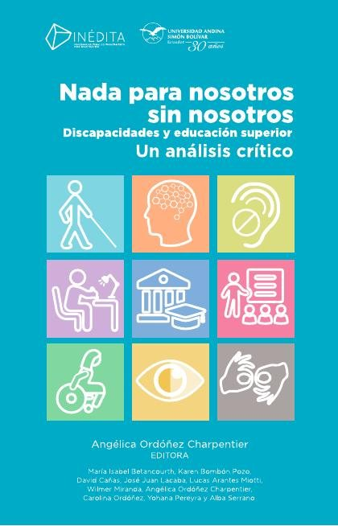
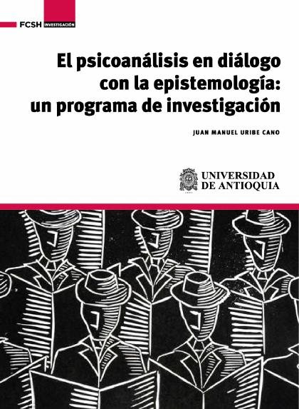
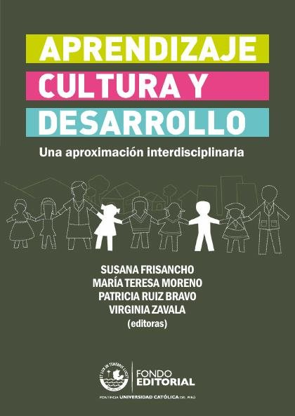

Libros de historia y corrientes de la psicología
Libros de historia y corrientes de la psicología en español: 53 libros completos para leer gratis aquí mismo y 2 fichas de títulos actuales.
Introducción a la obra de S. FreudClaudia Elena De Casas, Luis Horacio Volta
Introducción a la obra de S. FreudClaudia Elena De Casas, Luis Horacio VoltaHistorias que importan: una propuesta de intervención acerca de los conflictos psicológicos en la búsqueda de asiloOrrego Gañán, Pilar; Español Nogueiro, Alicia
Historias que importan: una propuesta de intervención acerca de los conflictos psicológicos en la búsqueda de asiloOrrego Gañán, Pilar; Español Nogueiro, AliciaPsicólogas pioneras. Historias de ciencia, feminismo y compromiso socialMonteagudo Soto, María José; García-Colmenares, Carmen
Psicólogas pioneras. Historias de ciencia, feminismo y compromiso socialMonteagudo Soto, María José; García-Colmenares, CarmenRepercusiones neuronales y cognitivas de la formación musicalGonzález Hernández, Edurne; Lorenzo de Reizábal, Arantza; Bausela Herreras, Esperanza
Repercusiones neuronales y cognitivas de la formación musicalGonzález Hernández, Edurne; Lorenzo de Reizábal, Arantza; Bausela Herreras, EsperanzaCrítica cultural y psicología: la teoría del apego en EcuadorVillamarín Bernal, Glenda Zulay
Crítica cultural y psicología: la teoría del apego en EcuadorVillamarín Bernal, Glenda ZulayPsicología psicoanalítica - psicoanálisis y educaciónCatelli, Jorge Eduardo
Psicología psicoanalítica - psicoanálisis y educaciónCatelli, Jorge EduardoTeoría socio-histórica, aprendizaje y educaciónDubrovsky, Silvia
Teoría socio-histórica, aprendizaje y educaciónDubrovsky, SilviaDoctor en su propio pueblo : Historia de vida de un intelectual asháninkaCasantos Shingari, Raúl
Doctor en su propio pueblo : Historia de vida de un intelectual asháninkaCasantos Shingari, RaúlNada para nosotros sin nosotros: discapacidades y educación superior; un análisis críticoOrdóñez Charpentier, Angélica Verónica, edit.; Lacaba Gutiérrez, José Juan; Bombón Pozo, Karen Johanna; Serrano Albuja, Alba Janeth; Cañas Sigüenza, David Alejandro; Pereyra, Yohana Lorena; Ordóñez Ch
Nada para nosotros sin nosotros: discapacidades y educación superior; un análisis críticoOrdóñez Charpentier, Angélica Verónica, edit.; Lacaba Gutiérrez, José Juan; Bombón Pozo, Karen Johanna; Serrano Albuja, Alba Janeth; Cañas Sigüenza, David Alejandro; Pereyra, Yohana Lorena; Ordóñez Ch
Psicoterapias humanistas. Una mirada actualJordi Segura Bernal, Victoria Fernández-Puig y otros
Psicoterapias humanistas. Una mirada actualJordi Segura Bernal, Victoria Fernández-Puig y otrosPerspectiva cognitiva del estudio del desarrollo de la escritura y sus alteracionesMiranda, María Agustina
Perspectiva cognitiva del estudio del desarrollo de la escritura y sus alteracionesMiranda, María AgustinaPrograma para la promoción de parentalidad positiva en familias refugiadasJiménez García, Lucía; Hidalgo García, María Victoria; Nogales Groiss, Irina; Baena Medina, Magdalena Sofía; Maya Segura, Jesús Manuel
Programa para la promoción de parentalidad positiva en familias refugiadasJiménez García, Lucía; Hidalgo García, María Victoria; Nogales Groiss, Irina; Baena Medina, Magdalena Sofía; Maya Segura, Jesús ManuelAportes interdisciplinarios en PsicopatologíaJulieta De Battista y otros
Aportes interdisciplinarios en PsicopatologíaJulieta De Battista y otrosEl psicoanálisis en diálogo con la epistemología : un programa de investigaciónUribe Cano, Juan Manuel
El psicoanálisis en diálogo con la epistemología : un programa de investigaciónUribe Cano, Juan Manuel
Intervención breve basada en psicología positiva para potenciar la resiliencia ante la adversidad. Guía para el profesionalSerrano-Zárate, Berenice; De la Rosa Gómez, Anabel
Intervención breve basada en psicología positiva para potenciar la resiliencia ante la adversidad. Guía para el profesionalSerrano-Zárate, Berenice; De la Rosa Gómez, AnabelPalabra De FreudPablo Cazau
Palabra De FreudPablo CazauTrabajo comunitario en la ciudad de Córdoba : cuadernos de psicología comunitaria nº 1Barrault, Omar; Chena, Marina; Muro, Julio; Marín, Marcela Cecilia; Trigo, María José; Plaza, Silvia Liliana
Trabajo comunitario en la ciudad de Córdoba : cuadernos de psicología comunitaria nº 1Barrault, Omar; Chena, Marina; Muro, Julio; Marín, Marcela Cecilia; Trigo, María José; Plaza, Silvia LilianaNo estoy viajando callado : historia de vida de un maestro boraDíaz Peña, Hilario
No estoy viajando callado : historia de vida de un maestro boraDíaz Peña, HilarioRecursos de salud positiva: estudio exploratorio con grupos del ámbito escolar de PamplonaSáenz Mendía, Raquel; Gabari Gambarte, María Inés; García García, José María
Recursos de salud positiva: estudio exploratorio con grupos del ámbito escolar de PamplonaSáenz Mendía, Raquel; Gabari Gambarte, María Inés; García García, José MaríaDel conductismo, cognitivismo y constructivismo al conectivismo para la educaciónLedesma-Ayora, Marco
Del conductismo, cognitivismo y constructivismo al conectivismo para la educaciónLedesma-Ayora, MarcoPromoción de la parentalidad positiva durante la preparación al nacimiento y la crianzaPalacios González, Jesús; Moreno Rodríguez, María del Carmen; Oliva Delgado, Alfredo; Román Rodríguez, Maite; Antolín Suárez, Lucía; Estévez Campos, Rosa Mª; Pascual García, Diana Mª
Promoción de la parentalidad positiva durante la preparación al nacimiento y la crianzaPalacios González, Jesús; Moreno Rodríguez, María del Carmen; Oliva Delgado, Alfredo; Román Rodríguez, Maite; Antolín Suárez, Lucía; Estévez Campos, Rosa Mª; Pascual García, Diana MªFreud y Schopenhauer : voluntad, pulsión y represiónOtero, Francisco
Freud y Schopenhauer : voluntad, pulsión y represiónOtero, FranciscoPsicoanálisis, semiótica y lingüística : una alianza conveniente para el estudio de los sueñosVinocur Fischbein, Susana
Psicoanálisis, semiótica y lingüística : una alianza conveniente para el estudio de los sueñosVinocur Fischbein, SusanaUna visión binocular : psicoanálisis y filosofíaBettocchi, Bárbara; Fatule, Raúl
Una visión binocular : psicoanálisis y filosofíaBettocchi, Bárbara; Fatule, RaúlFamilias en riesgo que reciben intervenciones de preservación familiar: Perfil psicosocial de una muestra de los Servicios Sociales Comunitarios de la Diputación de HuelvaMenéndez Álvarez-Dardet, Susana; Hidalgo García, María Victoria; Mendoza Sierra, María Isabel; Pérez Padilla, Javier; Lorence Lara, Bárbara; Sánchez Hidalgo, José; Jiménez García, Lucía; Arenas Rojas,
Familias en riesgo que reciben intervenciones de preservación familiar: Perfil psicosocial de una muestra de los Servicios Sociales Comunitarios de la Diputación de HuelvaMenéndez Álvarez-Dardet, Susana; Hidalgo García, María Victoria; Mendoza Sierra, María Isabel; Pérez Padilla, Javier; Lorence Lara, Bárbara; Sánchez Hidalgo, José; Jiménez García, Lucía; Arenas Rojas,¿Qué tipo de niveles postular en las explicaciones en ciencias cognitivas?Ahumada, José; Branca, Mariana Itatí
¿Qué tipo de niveles postular en las explicaciones en ciencias cognitivas?Ahumada, José; Branca, Mariana ItatíHistorias de vida en educación: sujeto, diálogo, experienciaRivas, José Ignacio; Hernández, Fernando (Hernández Hernández); Sancho, Juana Ma.; Núñez, Claudio; Universitat de Barcelona. GRC Esbrina, Subjectivitats i Entorns Educatius Contemporanis
Historias de vida en educación: sujeto, diálogo, experienciaRivas, José Ignacio; Hernández, Fernando (Hernández Hernández); Sancho, Juana Ma.; Núñez, Claudio; Universitat de Barcelona. GRC Esbrina, Subjectivitats i Entorns Educatius ContemporanisPropuestas para la promoción del desarrollo positivo adolescenteOliva Delgado, Alfredo; Pertegal Vega, Miguel Ángel; Antolín Suárez, Lucía; Reina Flores, María del Carmen; Parra Jiménez, Águeda; Hernando Gómez, Ángel; Pascual García, Diana Mª; Estévez Campos, Rosa
Propuestas para la promoción del desarrollo positivo adolescenteOliva Delgado, Alfredo; Pertegal Vega, Miguel Ángel; Antolín Suárez, Lucía; Reina Flores, María del Carmen; Parra Jiménez, Águeda; Hernando Gómez, Ángel; Pascual García, Diana Mª; Estévez Campos, RosaAprendizaje, cultura y desarrollo : una aproximación interdisciplinariaFrisancho, Susana
Aprendizaje, cultura y desarrollo : una aproximación interdisciplinariaFrisancho, Susana
Historias de vida en educación: biografías en contextoHernández, Fernando (Hernández Hernández); Sancho, Juana Ma.; Rivas, José Ignacio
Historias de vida en educación: biografías en contextoHernández, Fernando (Hernández Hernández); Sancho, Juana Ma.; Rivas, José IgnacioGuía para trabajar la historia de vida con niños y niñas: Acogimiento familiar y residencialJiménez Morago, Jesús Miguel; Martínez Cabeza, Rocío; Mata Fernández, Estefanía
Guía para trabajar la historia de vida con niños y niñas: Acogimiento familiar y residencialJiménez Morago, Jesús Miguel; Martínez Cabeza, Rocío; Mata Fernández, EstefaníaLas cartas a Fliess : una vía diferente de acercamiento al psicoanálisisMaldonado Pedreros, Miguel Angel
Las cartas a Fliess : una vía diferente de acercamiento al psicoanálisisMaldonado Pedreros, Miguel AngelPrograma de actuación cognitiva integral en demencias (PACID)García Meilán, Juan José; Carro Ramos, Juan Avelino
Programa de actuación cognitiva integral en demencias (PACID)García Meilán, Juan José; Carro Ramos, Juan AvelinoLa Sección de Psicología de la Universidad Central de Barcelona : historia y perspectivasLópez-Feal, Rafael; Malapeira Gas, Joan Ma. (Joan Maria), 1951-2015; Universitat de Barcelona. Institut de Ciències de l'Educació
La Sección de Psicología de la Universidad Central de Barcelona : historia y perspectivasLópez-Feal, Rafael; Malapeira Gas, Joan Ma. (Joan Maria), 1951-2015; Universitat de Barcelona. Institut de Ciències de l'EducacióPsicología del pueblo charro, según las obras de don Luis Maldonado : discurso leído en la solemne apertura del curso académico de 1929 a 1930Alcayde y Vilar, Francisco
Psicología del pueblo charro, según las obras de don Luis Maldonado : discurso leído en la solemne apertura del curso académico de 1929 a 1930Alcayde y Vilar, FranciscoIdea Jeneral de la Filosofía Positiva I de la Sicolojía ModernaHerrera, M. A.
Idea Jeneral de la Filosofía Positiva I de la Sicolojía ModernaHerrera, M. A.Hipnotismo y sugestion; nociones generales, historia, sintomatología, fisiología, medicina-legal y terapéutica de la hipnosisMaira, Octavio; Benavente, David
Hipnotismo y sugestion; nociones generales, historia, sintomatología, fisiología, medicina-legal y terapéutica de la hipnosisMaira, Octavio; Benavente, DavidExamen de ingenios para las cienciasJuan Huarte de San Juan
Examen de ingenios para las cienciasJuan Huarte de San JuanPrograma de terapia asistida con animales para la promoción de la salud mental positivaBalaguer, Judith; Moreno Arroyo, M. Carmen; Lluch Canut, Ma. Teresa; Ristol Ubach, Francesc; Puig Llobet, Montserrat
Programa de terapia asistida con animales para la promoción de la salud mental positivaBalaguer, Judith; Moreno Arroyo, M. Carmen; Lluch Canut, Ma. Teresa; Ristol Ubach, Francesc; Puig Llobet, MontserratPrevención del suicidio: herramientas para la participación comunitaria
Prevención del suicidio: herramientas para la participación comunitariaFundamentos de la terapia sistémica breve, septiembre 2020GARCIA, FELIPE E.
Fundamentos de la terapia sistémica breve, septiembre 2020GARCIA, FELIPE E.Psicología comunitaria y problemas sociales, febrero 2019Jacques Aviñó, Constanza
Psicología comunitaria y problemas sociales, febrero 2019Jacques Aviñó, ConstanzaEl impacto de lo digital en la comunicación y las relaciones de los adolescentesSánchez-Navarro, Jordi; Aranda, Daniel
El impacto de lo digital en la comunicación y las relaciones de los adolescentesSánchez-Navarro, Jordi; Aranda, DanielExperiencias y reflexiones de salud mental comunitariaFernandez, Alicia Ruth; Enders, Julio Enrique; Romero, Daniel; Alvarado, Rubén; González, Cristina
Experiencias y reflexiones de salud mental comunitariaFernandez, Alicia Ruth; Enders, Julio Enrique; Romero, Daniel; Alvarado, Rubén; González, CristinaPsicología comunitaria y bienestar social, septiembre 2014Cantera Espinosa, Leonor María; Herrero Olaizola, Juan; Montenegro Martínez, Marisela; Musitu Ochoa, Gonzalo; Montero Rivas, Maritza; Serrano García, Irma
Psicología comunitaria y bienestar social, septiembre 2014Cantera Espinosa, Leonor María; Herrero Olaizola, Juan; Montenegro Martínez, Marisela; Musitu Ochoa, Gonzalo; Montero Rivas, Maritza; Serrano García, IrmaInconciente, Pulsión, Transferencia y Repetición. Lecturas freudianas de los cuatro conceptos fundamentales del PsicoanálisisGómez, Mariana; Campbell, Sergio; Biondini, Mauro; Cabanillas, Mario; Caminos, Mariano; Celis, María Eugenia; Gárate, Jorge; Huergo, Claudia; Morales, Alexis; Sabán, Roberto; Yosifides, Aris
Inconciente, Pulsión, Transferencia y Repetición. Lecturas freudianas de los cuatro conceptos fundamentales del PsicoanálisisGómez, Mariana; Campbell, Sergio; Biondini, Mauro; Cabanillas, Mario; Caminos, Mariano; Celis, María Eugenia; Gárate, Jorge; Huergo, Claudia; Morales, Alexis; Sabán, Roberto; Yosifides, ArisIntroducción a la psicología científicaMarc Guasch Moix
Introducción a la psicología científicaMarc Guasch MoixEl psicoanálisisMáximo García, Gerardo; Rivarola Padrós, Pablo
El psicoanálisisMáximo García, Gerardo; Rivarola Padrós, PabloPsicología del desarrollo. Un enfoque sistémico Un enfoque sistémico. Tercera edición (incluye web)Perinat Maceres, Adolfo
Psicología del desarrollo. Un enfoque sistémico Un enfoque sistémico. Tercera edición (incluye web)Perinat Maceres, Adolfo Introducción a la historia de la psicopatologíaDomènech, Edelmira
Introducción a la historia de la psicopatologíaDomènech, EdelmiraEl psicoanálisis, la ciencias sociales y el mundo popularPortocarrero Maisch, Gonzalo
El psicoanálisis, la ciencias sociales y el mundo popularPortocarrero Maisch, GonzaloHistorias de EnfermosHermilio Valdizán
Historias de EnfermosHermilio ValdizánLa historia de la educación de la inteligencia : discurso inaugural que en la solemne apertura de los estudios de la Universidad Literaria de SalamancaHerrero Garrido, Cándido
La historia de la educación de la inteligencia : discurso inaugural que en la solemne apertura de los estudios de la Universidad Literaria de SalamancaHerrero Garrido, CándidoEl miedo a la libertadErich Fromm
El miedo a la libertadErich FrommLa auténtica felicidadMartin E. P. Seligman
La auténtica felicidadMartin E. P. SeligmanTemas relacionados
¿Estás eligiendo carrera?
Haz gratis el test de orientación vocacional de AURZANE: intereses, aptitudes, autoconcepto y hábitos de estudio, con informe completo.